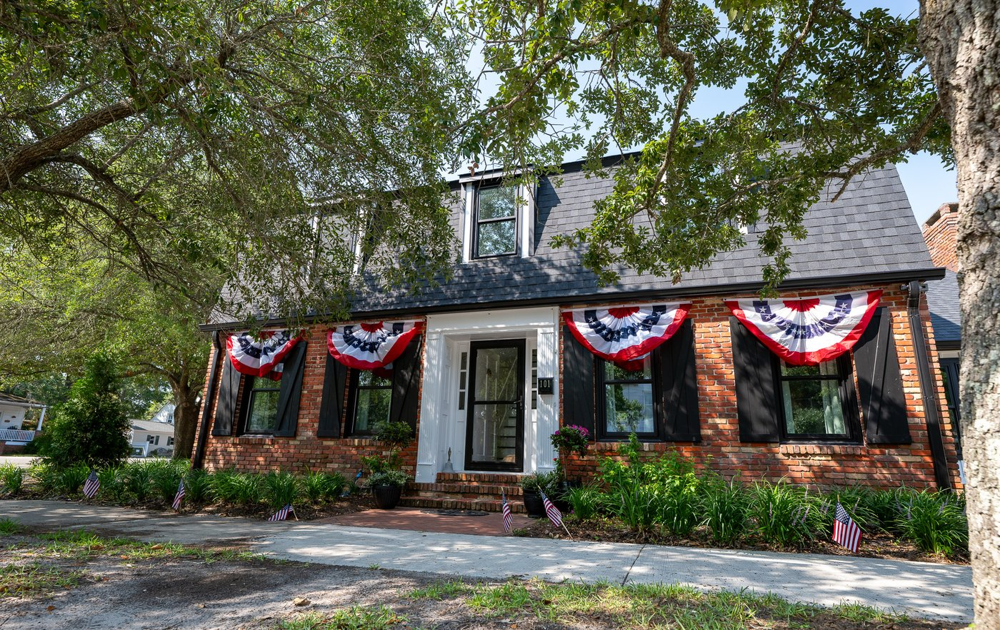
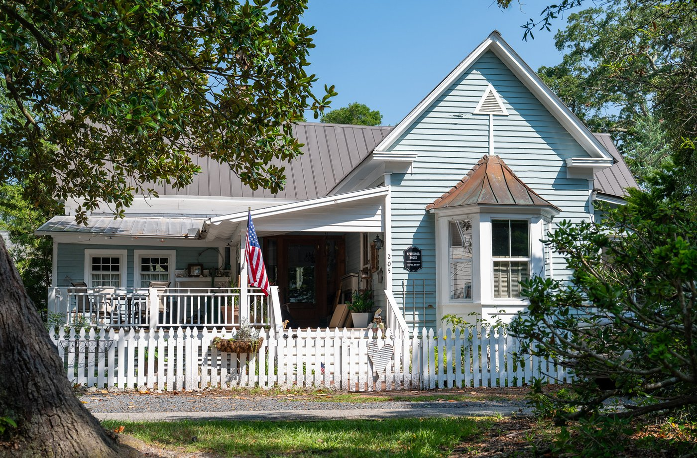
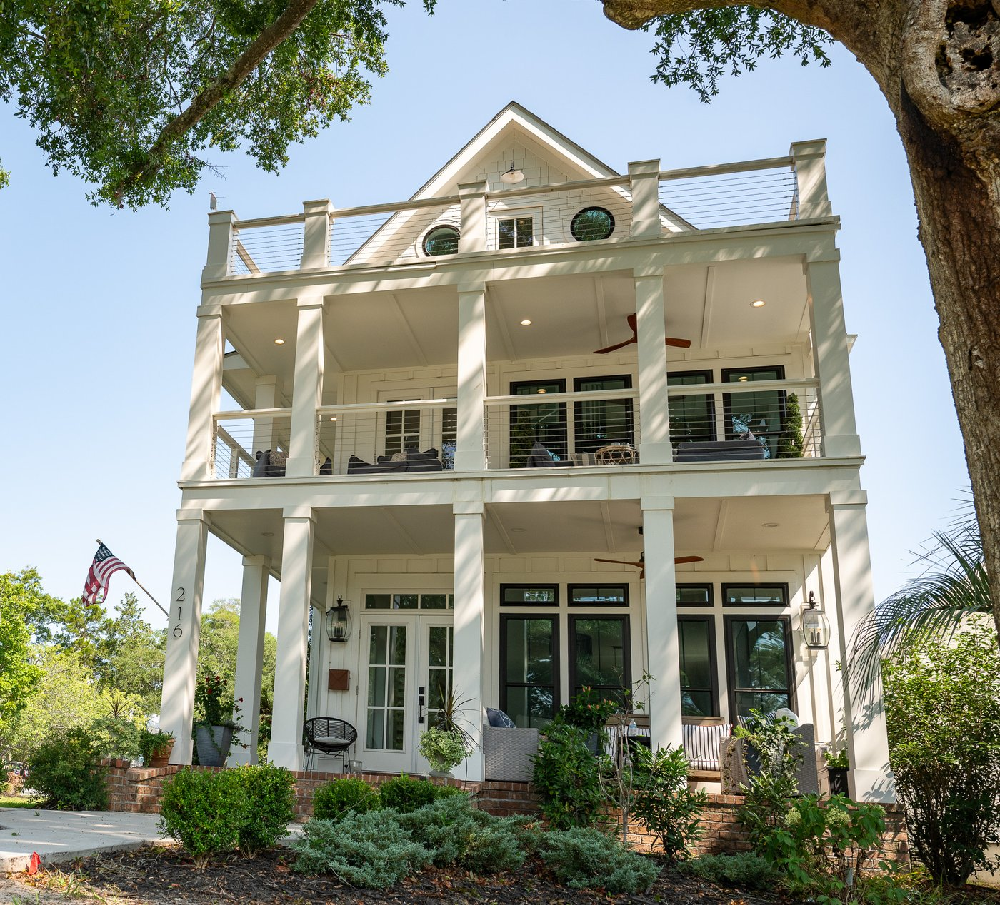
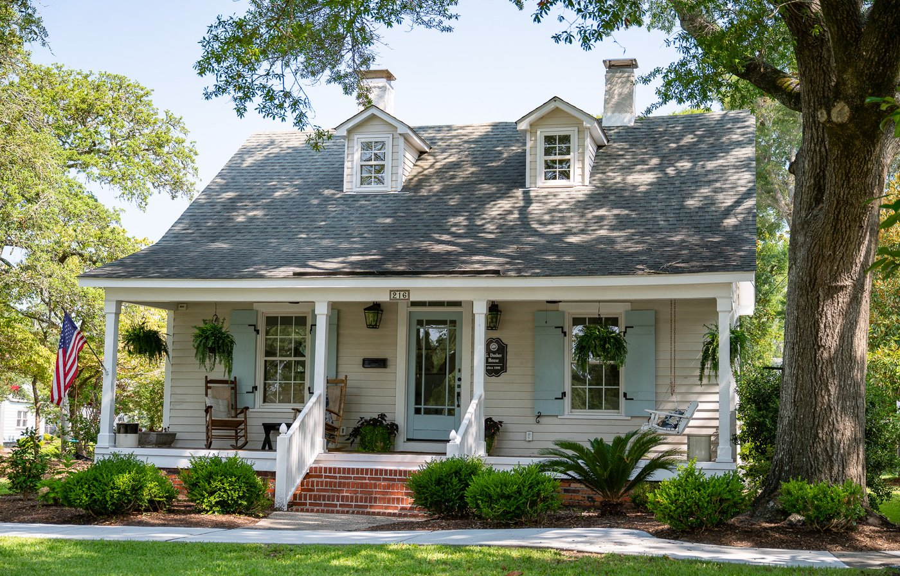
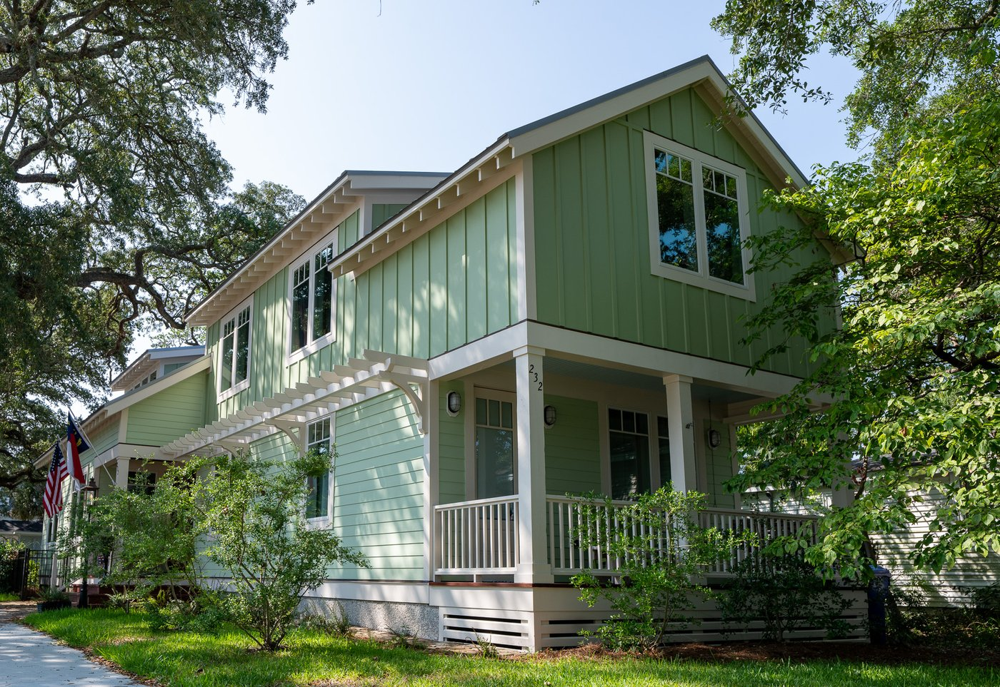
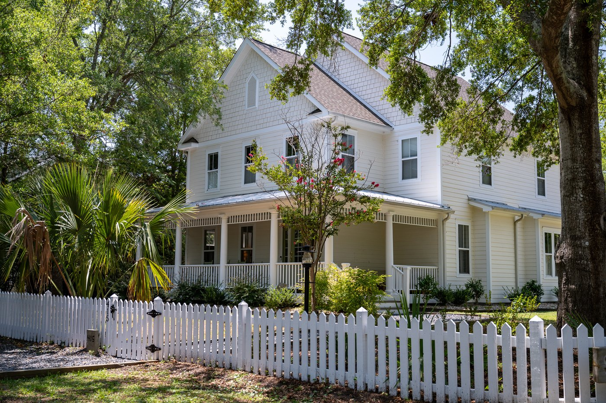
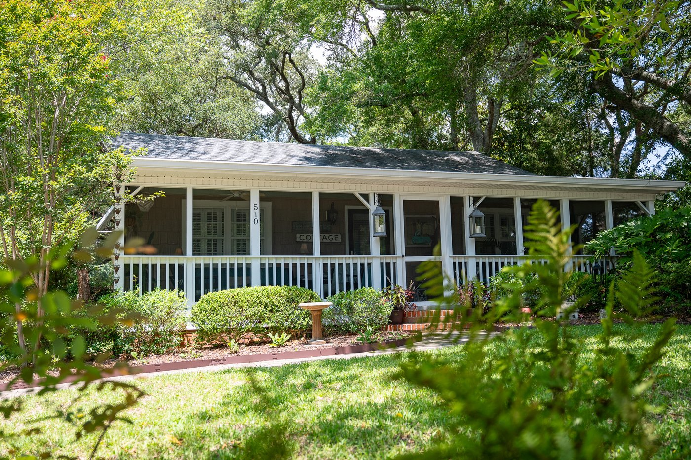
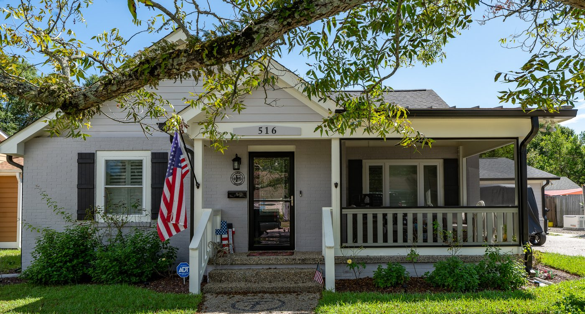
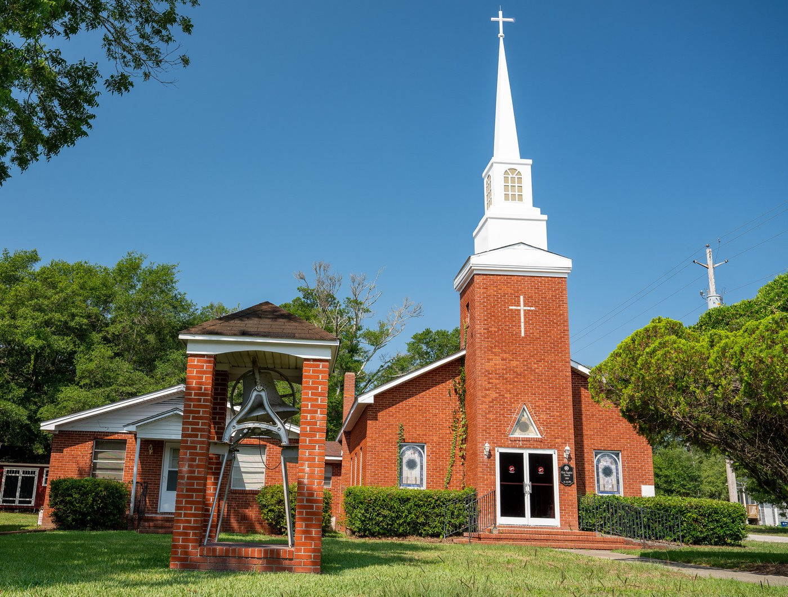
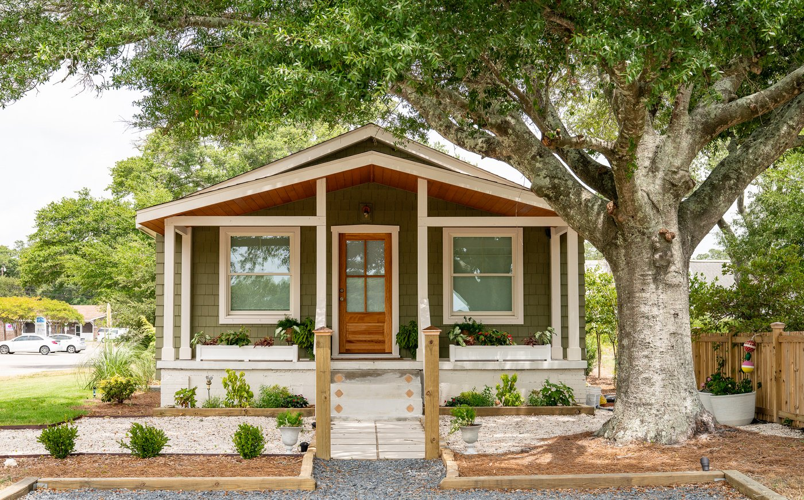

Celebrate the Holidays, Southport Style!
One of Southport’s favorite holiday traditions returns this December! The Southport Historical Society and Downtown Southport, Inc. invite you to enjoy beautifully decorated homes and the distinctive charm, character, and history of our coastal community.
This year, there are two ways to enjoy the tour: a new guided walking experience on Friday and our traditional self-guided tour on Saturday.
Choose Your Tour
Friday Reception
After the tour, enjoy a reception from 5:00 to 5:30 p.m. with light refreshments, live music by Jabbertown Jazz Junction, and a drawing for the holiday wreath featured on the cover of the 2026 Holiday Home Tour Keepsake Booklet. Each Friday guest receives one complimentary raffle ticket.
A Sneak Peek at This Year’s Homes
From traditional Southport cottages to contemporary residences, this year’s tour celebrates the variety of homes that make our community special.










We are grateful to the homeowners and church community who generously open their doors for this holiday tradition.
Ticket Sales
Members-Only Presale
Members of the Southport Historical Society have an opportunity to purchase tickets before they go on sale to the general public.
Eligibility: Your membership must have been current as of September 30, 2026.
Each eligible membership may purchase up to TWO TICKETS TOTAL, for EITHER Friday OR Saturday — not both. This limit is per membership, regardless of whether it is an individual or family membership.
| Tour | Reserved for presale | Ticket price |
|---|---|---|
| Friday guided tour | 100 tickets | $75 |
| Saturday self-guided tour | 500 tickets | $35 |
Presale tickets are first-come, first-served and are not guaranteed. Eligible members will receive an email with the presale dates, purchase link, and instructions. Presale purchases are subject to verification against membership records. The purchase link is for eligible members only and should not be shared.
Need more than two tickets? Members may also shop during the public sale, subject to availability.
General Public Ticket Sales
Thursday, November 19, 2026, beginning at 10:00 a.m.
Any presale tickets not purchased by members will be carried into the public sale. The number of public-sale tickets therefore depends on presale demand:
| Tour | Tickets available at public opening | Ticket price |
|---|---|---|
| Friday guided tour | 100–200 tickets | $75 |
| Saturday self-guided tour | 500–1,000 tickets | $35 |
For perspective, 701 Saturday tour tickets were sold during last year’s public sale.
Public-sale purchases are limited to four tickets per transaction. Public sales are open to everyone, including members who want additional tickets or tickets for the other tour. All tickets are sold online, subject to availability.
Purchase Tickets — Available November 19 at 10:00 a.m.
Tickets and Check-In
Friday Guided Walking Tour
Tickets are issued at the private event check-in; the location and instructions come with your purchase confirmation receipt. Each guest also receives one complimentary raffle ticket for the holiday wreath.
Saturday Self-Guided Tour
The purchaser must pick up Saturday tour tickets at the Fort Johnston Southport Museum and Visitor Center.
Pickup dates: Saturday, December 5, through Saturday, December 12, 2026.
Hours: Monday–Saturday, 10:00 a.m.–4:00 p.m. Closed Sunday, December 6.
Tickets are not mailed. Pick up your Saturday tickets before starting the tour. On tour day, pickup closes at 4:00 p.m., even though the tour continues until 5:00 p.m.
Planning Your Visit
The Holiday Tour of Homes takes place rain or shine. We recommend comfortable, soft-soled shoes for walking and to protect the floors of the homes. High heels, strollers, food, beverages, and pets are not permitted inside the homes. Restrooms in private residences are not available to guests. Public restrooms are available at the Southport Visitor Center and at the city restrooms on Nash Street.
Frequently Asked Questions
Presale
- Can I join the Southport Historical Society now to qualify for the 2026 members-only presale?
- No. Eligibility is based on memberships that were current as of September 30, 2026. New members can enjoy future membership benefits.
- Does a family membership receive more presale tickets?
- Every eligible membership has the same maximum of two presale tickets in total.
- Am I guaranteed presale tickets if I am eligible?
- SHS reserves half of the Tour of Homes tickets for the Members only presale (100 for Friday and 500 for Saturday). So far, we have never sold out of the presale tickets so all memberships that were interested were able to purchase two tickets. While we can't guarantee we won't run out of presale tickets, so far that has not happened.
- I think I qualify but did not receive a presale email. What should I do?
- Sometimes our emails go to Spam or Promotions. Look for it there. If you still can't find it, check the Presale Eligible Self-check on our homepage. If you are still unsure, contact us.
- What if I accidentally purchase more presale tickets than allowed?
- Contact us promptly. Purchases outside the eligibility or ticket-limit rules cannot be honored.
- How do you ensure that everyone follows the Presale rules?
- All presale purchases are checked against Society membership records; ineligible or above-limit purchases will not be honored.
Friday Event
- Do Friday guests need to collect tickets at Fort Johnston?
- No. Friday guests receive their tickets at event check-in. Their confirmation receipt will include the private check-in details.
General
- Is there a limit on ticket sales during the Public sale?
- Tickets are limited to four tickets per transaction. If more tickets are needed, log back in and purchase more. The public sale is open to all including SHS members.
- Will the tour go ahead if it rains?
- Yes. The Holiday Tour of Homes takes place rain or shine. In the rare event of a December thunderstorm, we will close the doors for the duration of the storm for the safety of our guests and our volunteers. Please be aware that this is a fund raising event for the benefit of two Southport nonprofits and refunds will not be given.
- My plans have changed. Can I get a refund?
- Tickets are non-refundable. However SHS usually has a waitlist and can connect you with people interested in purchasing your tickets. However, as the original purchaser, you must pick up your tickets at Fort Johnston.
Not a Member Yet?
Membership supports the Southport Historical Society’s museums, preservation efforts, educational programs, scholarships, and community activities. New memberships purchased after September 30 do not qualify for the 2026 presale, but membership offers opportunities to enjoy benefits in future years.
Your Purchase of Tickets to the Holiday Tour of Homes supports Southport
The Holiday Tour of Homes is a joint fundraiser for the Southport Historical Society and Downtown Southport, Inc. Your support helps fund two Southport history museums, community educational programs, a scholarship for a Brunswick County high school student, sponsorship of the NC Fourth of July Naturalization Ceremony, and other efforts to preserve Southport’s heritage and charm while keeping downtown a vibrant place for residents and visitors.
We’re grateful to the homeowners, volunteers, sponsors, and guests who make this holiday tradition possible. Together, we’re celebrating not just Southport’s beautiful homes, but the history, people, and community that make our town special.